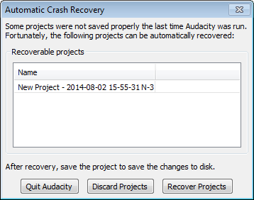

Automatic Crash Recovery
From Audacity Manual
If there were no unsaved changes at the time of the crash, there will be no recovery dialog - all you need to do is re-open the saved AUP file.
- 
- The project name in the list of recoverable projects includes the date and time of the autosave file, preceded by either the name of the project or by "New Project" for a project that was never saved as an .aup file.
Automatic Crash Recovery
- Exits Audacity without any changes. The Automatic Crash Recovery dialog will reappear next time you launch Audacity.
- Discards the unsaved data for all projects. You will receive a prompt asking if you are sure this is what you want to do. If you confirm that want to discard all projects, they will not be recoverable later.
- Attempts to recover the unsaved data for all projects, and load the recovered waveforms. If there are multiple unsaved projects, each will recover into their own project window. Note that the project history is not recoverable, so you can only recover to the project state at or just before the crash. You also cannot recover the text contents of a label whose text was being added at the time of the crash or where there was no action that triggered autosave after closing the new label.
Note that it is common if there are unsaved changes at the time of the crash for Audacity to warn of "file inconsistencies" when recovering the project. This usually means merely that there are "orphan block files" in the data that were there to enable undo or redo of a project action but which are now superfluous to the recovered project. If this was the case, you would see a note on opening that orphan files would be deleted on saving the project, but no warnings about other kinds of file error.
|
Manual Recovery
If the Automatic Crash Recovery does not appear after a crash with unsaved changes, or the recovered audio cannot be corrected by searching for files, it may be possible to recover a single, unedited mono recording using crash recovery tools written for previous versions of Audacity. Stereo or edited audio is unlikely to be recovered in the correct sequence.
- In order to use the crash recovery tools, it is essential to rename the unsaved .au files to a consecutive alphanumeric sequence. See "Recovering crashes manually" for detailed help.
- If you had never saved a project before the crash, the .au files will be in Audacity's temporary folder, whose location can be found by looking in Directories Preferences.
- If you had saved the project previously, the .au files will be in the _data folder inside the directory containing the .aup project file.